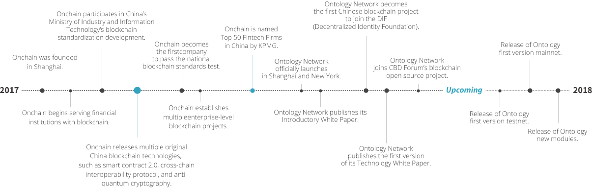
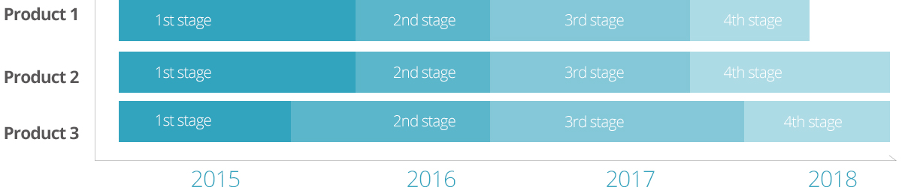

About Us

Ontology Network Introduction
Ontology Network is a diverse, integrated, distributed trust network and the infrastructure for building a trust ecosystem. Ontology encourages trust cooperation and allows projects of all shapes, sizes, and technologies with different business scenarios and compliance requirements to pass through Ontology’s chain networks and take advantage of the distributed trust network how they see fit.
Ontology Network has become the first blockchain project from China to join the Decentralized Identity Foundation, which aims to build a standardized decentralized ecosystem for online identities. Also, Ontology has been involved in ISO/IEC TC307 and CBD Forum’s blockchain open source project.
Road Map
